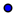

<!doctype html>
<html lang="en">
    <head>
        <meta charset="utf-8">
        <meta http-equiv="X-UA-Compatible" content="IE=edge">
        <meta name="viewport" content="initial-scale=1,user-scalable=no,maximum-scale=1,width=device-width">
        <meta name="mobile-web-app-capable" content="yes">
        <meta name="apple-mobile-web-app-capable" content="yes">
        <link rel="stylesheet" href="css/leaflet.css">
        <link rel="stylesheet" href="css/L.Control.Layers.Tree.css">
        <link rel="stylesheet" href="css/qgis2web.css">
        <link rel="stylesheet" href="css/fontawesome-all.min.css">
        <style>
        html, body, #map {
            width: 100%;
            height: 100%;
            padding: 0;
            margin: 0;
        }
        </style>
        <title></title>
    </head>
    <body>
        <div id="map">
        </div>
        <script src="js/qgis2web_expressions.js"></script>
        <script src="js/leaflet.js"></script>
        <script src="js/L.Control.Layers.Tree.min.js"></script>
        <script src="js/leaflet.rotatedMarker.js"></script>
        <script src="js/leaflet.pattern.js"></script>
        <script src="js/leaflet-hash.js"></script>
        <script src="js/Autolinker.min.js"></script>
        <script src="js/rbush.min.js"></script>
        <script src="js/labelgun.min.js"></script>
        <script src="js/labels.js"></script>
        <script src="data/POL_APP_2.js"></script>
        <script src="data/POL_HIDRO_3.js"></script>
        <script src="data/LINE_HIDRO_4.js"></script>
        <script src="data/PTO_NASCENTES_5.js"></script>
        <script src="data/LINE_COTAS_6.js"></script>
        <script src="data/POL_PROP_7.js"></script>
        <script>
        var map = L.map('map', {
            zoomControl:false, maxZoom:28, minZoom:1
        }).fitBounds([[-19.21886454284937,-45.05525107729854],[-19.198155781600406,-45.011973940598175]]);
        var hash = new L.Hash(map);
        map.attributionControl.setPrefix('<a href="https://github.com/tomchadwin/qgis2web" target="_blank">qgis2web</a> &middot; <a href="https://leafletjs.com" title="A JS library for interactive maps">Leaflet</a> &middot; <a href="https://qgis.org">QGIS</a>');
        var autolinker = new Autolinker({truncate: {length: 30, location: 'smart'}});
        // remove popup's row if "visible-with-data"
        function removeEmptyRowsFromPopupContent(content, feature) {
         var tempDiv = document.createElement('div');
         tempDiv.innerHTML = content;
         var rows = tempDiv.querySelectorAll('tr');
         for (var i = 0; i < rows.length; i++) {
             var td = rows[i].querySelector('td.visible-with-data');
             var key = td ? td.id : '';
             if (td && td.classList.contains('visible-with-data') && feature.properties[key] == null) {
                 rows[i].parentNode.removeChild(rows[i]);
             }
         }
         return tempDiv.innerHTML;
        }
        // add class to format popup if it contains media
		function addClassToPopupIfMedia(content, popup) {
			var tempDiv = document.createElement('div');
			tempDiv.innerHTML = content;
			if (tempDiv.querySelector('td img')) {
				popup._contentNode.classList.add('media');
					// Delay to force the redraw
					setTimeout(function() {
						popup.update();
					}, 10);
			} else {
				popup._contentNode.classList.remove('media');
			}
		}
        var zoomControl = L.control.zoom({
            position: 'topleft'
        }).addTo(map);
        var bounds_group = new L.featureGroup([]);
        function setBounds() {
        }
        map.createPane('pane_GoogleEarth_0');
        map.getPane('pane_GoogleEarth_0').style.zIndex = 400;
        var layer_GoogleEarth_0 = L.tileLayer('http://www.google.cn/maps/vt?lyrs=s@189&gl=cn&x={x}&y={y}&z={z}', {
            pane: 'pane_GoogleEarth_0',
            opacity: 1.0,
            attribution: '',
            minZoom: 1,
            maxZoom: 28,
            minNativeZoom: 0,
            maxNativeZoom: 18
        });
        layer_GoogleEarth_0;
        map.addLayer(layer_GoogleEarth_0);
        map.createPane('pane_NDVI_1');
        map.getPane('pane_NDVI_1').style.zIndex = 401;
        var img_NDVI_1 = 'data/NDVI_1.png';
        var img_bounds_NDVI_1 = [[-19.216788646139566,-45.04450883512361],[-19.200264094032946,-45.02235897944695]];
        var layer_NDVI_1 = new L.imageOverlay(img_NDVI_1,
                                              img_bounds_NDVI_1,
                                              {pane: 'pane_NDVI_1'});
        bounds_group.addLayer(layer_NDVI_1);
        map.addLayer(layer_NDVI_1);
        function pop_POL_APP_2(feature, layer) {
            var popupContent = '<table>\
                    <tr>\
                        <td colspan="2">' + (feature.properties['FID'] !== null ? autolinker.link(String(feature.properties['FID']).replace(/'/g, '\'').toLocaleString()) : '') + '</td>\
                    </tr>\
                    <tr>\
                        <td colspan="2">' + (feature.properties['FID_2'] !== null ? autolinker.link(String(feature.properties['FID_2']).replace(/'/g, '\'').toLocaleString()) : '') + '</td>\
                    </tr>\
                    <tr>\
                        <td colspan="2">' + (feature.properties['FID_3'] !== null ? autolinker.link(String(feature.properties['FID_3']).replace(/'/g, '\'').toLocaleString()) : '') + '</td>\
                    </tr>\
                </table>';
            var content = removeEmptyRowsFromPopupContent(popupContent, feature);
			layer.on('popupopen', function(e) {
				addClassToPopupIfMedia(content, e.popup);
			});
			layer.bindPopup(content, { maxHeight: 400 });
        }

        function style_POL_APP_2_0() {
            return {
                pane: 'pane_POL_APP_2',
                opacity: 1,
                color: 'rgba(35,35,35,0.0)',
                dashArray: '',
                lineCap: 'butt',
                lineJoin: 'miter',
                weight: 1.0, 
                fill: true,
                fillOpacity: 1,
                fillColor: 'rgba(255,255,0,0.4980392156862745)',
                interactive: true,
            }
        }
        map.createPane('pane_POL_APP_2');
        map.getPane('pane_POL_APP_2').style.zIndex = 402;
        map.getPane('pane_POL_APP_2').style['mix-blend-mode'] = 'normal';
        var layer_POL_APP_2 = new L.geoJson(json_POL_APP_2, {
            attribution: '',
            interactive: true,
            dataVar: 'json_POL_APP_2',
            layerName: 'layer_POL_APP_2',
            pane: 'pane_POL_APP_2',
            onEachFeature: pop_POL_APP_2,
            style: style_POL_APP_2_0,
        });
        bounds_group.addLayer(layer_POL_APP_2);
        map.addLayer(layer_POL_APP_2);
        function pop_POL_HIDRO_3(feature, layer) {
            var popupContent = '<table>\
                    <tr>\
                        <td colspan="2">' + (feature.properties['FID'] !== null ? autolinker.link(String(feature.properties['FID']).replace(/'/g, '\'').toLocaleString()) : '') + '</td>\
                    </tr>\
                </table>';
            var content = removeEmptyRowsFromPopupContent(popupContent, feature);
			layer.on('popupopen', function(e) {
				addClassToPopupIfMedia(content, e.popup);
			});
			layer.bindPopup(content, { maxHeight: 400 });
        }

        function style_POL_HIDRO_3_0() {
            return {
                pane: 'pane_POL_HIDRO_3',
                opacity: 1,
                color: 'rgba(35,35,35,0.0)',
                dashArray: '',
                lineCap: 'butt',
                lineJoin: 'miter',
                weight: 1.0, 
                fill: true,
                fillOpacity: 1,
                fillColor: 'rgba(0,0,255,0.4980392156862745)',
                interactive: true,
            }
        }
        map.createPane('pane_POL_HIDRO_3');
        map.getPane('pane_POL_HIDRO_3').style.zIndex = 403;
        map.getPane('pane_POL_HIDRO_3').style['mix-blend-mode'] = 'normal';
        var layer_POL_HIDRO_3 = new L.geoJson(json_POL_HIDRO_3, {
            attribution: '',
            interactive: true,
            dataVar: 'json_POL_HIDRO_3',
            layerName: 'layer_POL_HIDRO_3',
            pane: 'pane_POL_HIDRO_3',
            onEachFeature: pop_POL_HIDRO_3,
            style: style_POL_HIDRO_3_0,
        });
        bounds_group.addLayer(layer_POL_HIDRO_3);
        map.addLayer(layer_POL_HIDRO_3);
        function pop_LINE_HIDRO_4(feature, layer) {
            var popupContent = '<table>\
                    <tr>\
                        <td colspan="2">' + (feature.properties['FID'] !== null ? autolinker.link(String(feature.properties['FID']).replace(/'/g, '\'').toLocaleString()) : '') + '</td>\
                    </tr>\
                </table>';
            var content = removeEmptyRowsFromPopupContent(popupContent, feature);
			layer.on('popupopen', function(e) {
				addClassToPopupIfMedia(content, e.popup);
			});
			layer.bindPopup(content, { maxHeight: 400 });
        }

        function style_LINE_HIDRO_4_0() {
            return {
                pane: 'pane_LINE_HIDRO_4',
                opacity: 1,
                color: 'rgba(0,0,255,1.0)',
                dashArray: '',
                lineCap: 'square',
                lineJoin: 'bevel',
                weight: 1.0,
                fillOpacity: 0,
                interactive: true,
            }
        }
        map.createPane('pane_LINE_HIDRO_4');
        map.getPane('pane_LINE_HIDRO_4').style.zIndex = 404;
        map.getPane('pane_LINE_HIDRO_4').style['mix-blend-mode'] = 'normal';
        var layer_LINE_HIDRO_4 = new L.geoJson(json_LINE_HIDRO_4, {
            attribution: '',
            interactive: true,
            dataVar: 'json_LINE_HIDRO_4',
            layerName: 'layer_LINE_HIDRO_4',
            pane: 'pane_LINE_HIDRO_4',
            onEachFeature: pop_LINE_HIDRO_4,
            style: style_LINE_HIDRO_4_0,
        });
        bounds_group.addLayer(layer_LINE_HIDRO_4);
        map.addLayer(layer_LINE_HIDRO_4);
        function pop_PTO_NASCENTES_5(feature, layer) {
            var popupContent = '<table>\
                    <tr>\
                        <td colspan="2">' + (feature.properties['FID'] !== null ? autolinker.link(String(feature.properties['FID']).replace(/'/g, '\'').toLocaleString()) : '') + '</td>\
                    </tr>\
                </table>';
            var content = removeEmptyRowsFromPopupContent(popupContent, feature);
			layer.on('popupopen', function(e) {
				addClassToPopupIfMedia(content, e.popup);
			});
			layer.bindPopup(content, { maxHeight: 400 });
        }

        function style_PTO_NASCENTES_5_0() {
            return {
                pane: 'pane_PTO_NASCENTES_5',
                radius: 4.0,
                opacity: 1,
                color: 'rgba(0,0,0,1.0)',
                dashArray: '',
                lineCap: 'butt',
                lineJoin: 'miter',
                weight: 2.0,
                fill: true,
                fillOpacity: 1,
                fillColor: 'rgba(0,0,255,1.0)',
                interactive: true,
            }
        }
        map.createPane('pane_PTO_NASCENTES_5');
        map.getPane('pane_PTO_NASCENTES_5').style.zIndex = 405;
        map.getPane('pane_PTO_NASCENTES_5').style['mix-blend-mode'] = 'normal';
        var layer_PTO_NASCENTES_5 = new L.geoJson(json_PTO_NASCENTES_5, {
            attribution: '',
            interactive: true,
            dataVar: 'json_PTO_NASCENTES_5',
            layerName: 'layer_PTO_NASCENTES_5',
            pane: 'pane_PTO_NASCENTES_5',
            onEachFeature: pop_PTO_NASCENTES_5,
            pointToLayer: function (feature, latlng) {
                var context = {
                    feature: feature,
                    variables: {}
                };
                return L.circleMarker(latlng, style_PTO_NASCENTES_5_0(feature));
            },
        });
        bounds_group.addLayer(layer_PTO_NASCENTES_5);
        map.addLayer(layer_PTO_NASCENTES_5);
        function pop_LINE_COTAS_6(feature, layer) {
            var popupContent = '<table>\
                    <tr>\
                        <td colspan="2">' + (feature.properties['fid'] !== null ? autolinker.link(String(feature.properties['fid']).replace(/'/g, '\'').toLocaleString()) : '') + '</td>\
                    </tr>\
                    <tr>\
                        <td colspan="2">' + (feature.properties['ID'] !== null ? autolinker.link(String(feature.properties['ID']).replace(/'/g, '\'').toLocaleString()) : '') + '</td>\
                    </tr>\
                    <tr>\
                        <td colspan="2">' + (feature.properties['ELEV'] !== null ? autolinker.link(String(feature.properties['ELEV']).replace(/'/g, '\'').toLocaleString()) : '') + '</td>\
                    </tr>\
                </table>';
            var content = removeEmptyRowsFromPopupContent(popupContent, feature);
			layer.on('popupopen', function(e) {
				addClassToPopupIfMedia(content, e.popup);
			});
			layer.bindPopup(content, { maxHeight: 400 });
        }

        function style_LINE_COTAS_6_0() {
            return {
                pane: 'pane_LINE_COTAS_6',
                opacity: 1,
                color: 'rgba(0,0,0,1.0)',
                dashArray: '',
                lineCap: 'square',
                lineJoin: 'bevel',
                weight: 1.0,
                fillOpacity: 0,
                interactive: true,
            }
        }
        map.createPane('pane_LINE_COTAS_6');
        map.getPane('pane_LINE_COTAS_6').style.zIndex = 406;
        map.getPane('pane_LINE_COTAS_6').style['mix-blend-mode'] = 'normal';
        var layer_LINE_COTAS_6 = new L.geoJson(json_LINE_COTAS_6, {
            attribution: '',
            interactive: true,
            dataVar: 'json_LINE_COTAS_6',
            layerName: 'layer_LINE_COTAS_6',
            pane: 'pane_LINE_COTAS_6',
            onEachFeature: pop_LINE_COTAS_6,
            style: style_LINE_COTAS_6_0,
        });
        bounds_group.addLayer(layer_LINE_COTAS_6);
        map.addLayer(layer_LINE_COTAS_6);
        function pop_POL_PROP_7(feature, layer) {
            var popupContent = '<table>\
                    <tr>\
                        <td colspan="2">' + (feature.properties['Name'] !== null ? autolinker.link(String(feature.properties['Name']).replace(/'/g, '\'').toLocaleString()) : '') + '</td>\
                    </tr>\
                    <tr>\
                        <td colspan="2">' + (feature.properties['descriptio'] !== null ? autolinker.link(String(feature.properties['descriptio']).replace(/'/g, '\'').toLocaleString()) : '') + '</td>\
                    </tr>\
                    <tr>\
                        <td colspan="2">' + (feature.properties['timestamp'] !== null ? autolinker.link(String(feature.properties['timestamp']).replace(/'/g, '\'').toLocaleString()) : '') + '</td>\
                    </tr>\
                    <tr>\
                        <td colspan="2">' + (feature.properties['begin'] !== null ? autolinker.link(String(feature.properties['begin']).replace(/'/g, '\'').toLocaleString()) : '') + '</td>\
                    </tr>\
                    <tr>\
                        <td colspan="2">' + (feature.properties['end'] !== null ? autolinker.link(String(feature.properties['end']).replace(/'/g, '\'').toLocaleString()) : '') + '</td>\
                    </tr>\
                    <tr>\
                        <td colspan="2">' + (feature.properties['altitudeMo'] !== null ? autolinker.link(String(feature.properties['altitudeMo']).replace(/'/g, '\'').toLocaleString()) : '') + '</td>\
                    </tr>\
                    <tr>\
                        <td colspan="2">' + (feature.properties['tessellate'] !== null ? autolinker.link(String(feature.properties['tessellate']).replace(/'/g, '\'').toLocaleString()) : '') + '</td>\
                    </tr>\
                    <tr>\
                        <td colspan="2">' + (feature.properties['extrude'] !== null ? autolinker.link(String(feature.properties['extrude']).replace(/'/g, '\'').toLocaleString()) : '') + '</td>\
                    </tr>\
                    <tr>\
                        <td colspan="2">' + (feature.properties['visibility'] !== null ? autolinker.link(String(feature.properties['visibility']).replace(/'/g, '\'').toLocaleString()) : '') + '</td>\
                    </tr>\
                    <tr>\
                        <td colspan="2">' + (feature.properties['drawOrder'] !== null ? autolinker.link(String(feature.properties['drawOrder']).replace(/'/g, '\'').toLocaleString()) : '') + '</td>\
                    </tr>\
                    <tr>\
                        <td colspan="2">' + (feature.properties['icon'] !== null ? autolinker.link(String(feature.properties['icon']).replace(/'/g, '\'').toLocaleString()) : '') + '</td>\
                    </tr>\
                </table>';
            var content = removeEmptyRowsFromPopupContent(popupContent, feature);
			layer.on('popupopen', function(e) {
				addClassToPopupIfMedia(content, e.popup);
			});
			layer.bindPopup(content, { maxHeight: 400 });
        }

        function style_POL_PROP_7_0() {
            return {
                pane: 'pane_POL_PROP_7',
                opacity: 1,
                color: 'rgba(0,0,0,1.0)',
                dashArray: '',
                lineCap: 'butt',
                lineJoin: 'miter',
                weight: 3.0, 
                fillOpacity: 0,
                interactive: true,
            }
        }
        map.createPane('pane_POL_PROP_7');
        map.getPane('pane_POL_PROP_7').style.zIndex = 407;
        map.getPane('pane_POL_PROP_7').style['mix-blend-mode'] = 'normal';
        var layer_POL_PROP_7 = new L.geoJson(json_POL_PROP_7, {
            attribution: '',
            interactive: true,
            dataVar: 'json_POL_PROP_7',
            layerName: 'layer_POL_PROP_7',
            pane: 'pane_POL_PROP_7',
            onEachFeature: pop_POL_PROP_7,
            style: style_POL_PROP_7_0,
        });
        bounds_group.addLayer(layer_POL_PROP_7);
        map.addLayer(layer_POL_PROP_7);
        var overlaysTree = [
            {label: ' POL_PROP', layer: layer_POL_PROP_7},
            {label: ' LINE_COTAS', layer: layer_LINE_COTAS_6},
            {label: ' PTO_NASCENTES', layer: layer_PTO_NASCENTES_5},
            {label: ' LINE_HIDRO', layer: layer_LINE_HIDRO_4},
            {label: ' POL_HIDRO', layer: layer_POL_HIDRO_3},
            {label: ' POL_APP', layer: layer_POL_APP_2},
            {label: "NDVI", layer: layer_NDVI_1},
            {label: "Google Earth", layer: layer_GoogleEarth_0},]
        var lay = L.control.layers.tree(null, overlaysTree,{
            //namedToggle: true,
            //selectorBack: false,
            //closedSymbol: '&#8862; &#x1f5c0;',
            //openedSymbol: '&#8863; &#x1f5c1;',
            //collapseAll: 'Collapse all',
            //expandAll: 'Expand all',
            collapsed: false, 
        });
        lay.addTo(map);
		document.addEventListener("DOMContentLoaded", function() {
            // set new Layers List height which considers toggle icon
            function newLayersListHeight() {
                var layerScrollbarElement = document.querySelector('.leaflet-control-layers-scrollbar');
                if (layerScrollbarElement) {
                    var layersListElement = document.querySelector('.leaflet-control-layers-list');
                    var originalHeight = layersListElement.style.height 
                        || window.getComputedStyle(layersListElement).height;
                    var newHeight = parseFloat(originalHeight) - 50;
                    layersListElement.style.height = newHeight + 'px';
                }
            }
            var isLayersListExpanded = true;
            var controlLayersElement = document.querySelector('.leaflet-control-layers');
            var toggleLayerControl = document.querySelector('.leaflet-control-layers-toggle');
            // toggle Collapsed/Expanded and apply new Layers List height
            toggleLayerControl.addEventListener('click', function() {
                if (isLayersListExpanded) {
                    controlLayersElement.classList.remove('leaflet-control-layers-expanded');
                } else {
                    controlLayersElement.classList.add('leaflet-control-layers-expanded');
                }
                isLayersListExpanded = !isLayersListExpanded;
                newLayersListHeight()
            });	
			// apply new Layers List height if toggle layerstree
			if (controlLayersElement) {
				controlLayersElement.addEventListener('click', function(event) {
					var toggleLayerHeaderPointer = event.target.closest('.leaflet-layerstree-header-pointer span');
					if (toggleLayerHeaderPointer) {
						newLayersListHeight();
					}
				});
			}
            // Collapsed/Expanded at Start to apply new height
            setTimeout(function() {
                toggleLayerControl.click();
            }, 10);
            setTimeout(function() {
                toggleLayerControl.click();
            }, 10);
            // Collapsed touch/small screen
            var isSmallScreen = window.innerWidth < 650;
            if (isSmallScreen) {
                setTimeout(function() {
                    controlLayersElement.classList.remove('leaflet-control-layers-expanded');
                    isLayersListExpanded = !isLayersListExpanded;
                }, 500);
            }  
        });       
        setBounds();
        var i = 0;
        layer_LINE_COTAS_6.eachLayer(function(layer) {
            var context = {
                feature: layer.feature,
                variables: {}
            };
            layer.bindTooltip((layer.feature.properties['ELEV'] !== null?String('<div style="color: #000000; font-size: 6pt; font-weight: bold; font-family: \'Open Sans\', sans-serif;">' + layer.feature.properties['ELEV']) + '</div>':''), {permanent: true, offset: [-0, -16], className: 'css_LINE_COTAS_6'});
            labels.push(layer);
            totalMarkers += 1;
              layer.added = true;
              addLabel(layer, i);
              i++;
        });
        L.ImageOverlay.include({
            getBounds: function () {
                return this._bounds;
            }
        });
        resetLabels([layer_LINE_COTAS_6]);
        map.on("zoomend", function(){
            resetLabels([layer_LINE_COTAS_6]);
        });
        map.on("layeradd", function(){
            resetLabels([layer_LINE_COTAS_6]);
        });
        map.on("layerremove", function(){
            resetLabels([layer_LINE_COTAS_6]);
        });
        </script>
    </body>
</html>
